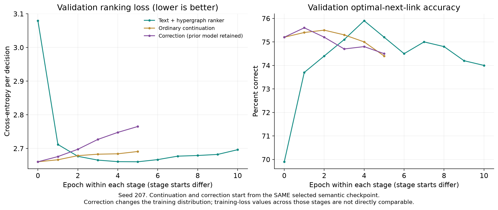

Bowen
I study applied mathematics and computer science at the University of Toronto. Here are my academic notes and personal projects, grouped by subject.
Academic
Course notes and reading notes. Some are still in progress.
Combinatorics & Graph Theory
- Advanced Combinatorics.
- Introduction to Combinatorics.
- Elementary Counting.
- Algebraic Combinatorics.
- Introduction to Graph Theory.
- Erdős–Rényi graphs — a short note on triangle counting.
Analysis & Topology
- Inequality Notes.
- Introduction to Topology.
- Arzelà–Ascoli — a short reading note on compactness and equicontinuity.
Algebra & Groups
- Elementary Algebra.
- Rings and ideals — an illustration of ideals in the integers.

Theoretical Computer Science (TCS)
- MAT1307 — Boolean Circuits. Notes in progress.
Project
Code, experiments, and learning projects.
Machine Learning & Neural Networks
- WikiClick — Wikipedia hyperlink navigation with Python, PyTorch, and NetworkX; graph search, semantic features, and learned next-link ranking. Run locally; experiments and figures.

Systems & Security
- Kali Linux lab — an isolated virtual machine for learning networking and web-security tools. Kali documentation; reference guide.
- Wireshark traffic analysis — TCP handshakes, resets, HTTP requests, packet filters, and stream inspection. Wireshark documentation.
P2P
- WireGuard tunnels — peer configuration, handshake checks, IP forwarding, NAT, and routing experiments. WireGuard quick start.
- Tailscale connectivity — testing connections and file transfers between devices on different networks. Tailscale documentation.
Web3
- Smart contracts and ETH payment channels — Solidity study notes, EIP-712 signatures, escrow accounting, replay and reentrancy tests, stateful invariants, and local-chain demos. Security self-review. Educational implementations; not independently audited.
- OpenZeppelin study — a reference for contract development and library use; the payment-channel lab uses OpenZeppelin cryptography and reentrancy protection.
- BNB support toolkit — a read-only Python prototype for RPC health, transaction-status, balance, and nonce checks, with JSON reports, tests, and a troubleshooting runbook.
AI Safety
- TAISI fellowship and Trajectory Labs — reading and discussion on AI capabilities, evaluation, and safety.